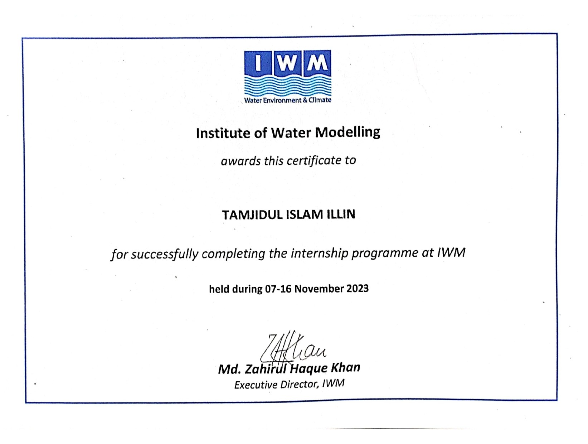
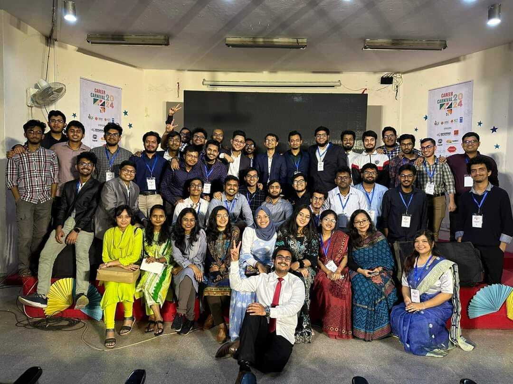

Downscaling Climate ModelData Using Machine Learning and Assessing the Impact of Climate Change on the Rainfall of Potomac Basin
Undergraduate Thesis
In this study, My downscaled output was at 0.17x0.2 degrees and I tried to visualize the impact of climate change on precipitation for SSP 3-7.00
Thesis Supervisor: Dr. A.T.M. Hasan Zobeyer
|
RIPARIAN MANAGEMNET and RIVERBANK EROSION: A case study on Harirampur Upazila
Tamjidul Islam Illin, Antara Paul, Mushtari Maliha
6th International Conference on Advances in Civil Engineering (ICACE-2022) 21-23 December 2022 CUET, Chattogram, Bangladesh
Our paper presents a case study on managing riverbank erosion through riparian management along the Padma River in Harirampur Upazila, Bangladesh. The study employs GIS and NDVI analyses to examine vegetation's role in mitigating erosion, proposing eco-friendly guidelines for sustainable riverbank protection based on observed spatiotemporal shifts and community feedback.
Supervisor: Mushtari Maliha
|
Soil Erosion Assessment in Rangamati District:Comparing Hydrological Conditions & Geospatial Data Before & After the 2017 Landslide Event
Himel Moulik, Mahin Saleh, Antara Paul,Tamjidul Islam Illin
Final paper number:0144,4th International Conference on Planning,Architecture & Civil Engineering(ICAPCE-2023) 12-14October,2023 RUET,Rajshahi,Bangladesh
Our paper examines the effects of land use and land cover (LULC) changes on flash flood patterns in the Sylhet region of Bangladesh, particularly focusing on how increased urban development and reduced forest cover influence flood timing. Using the HEC-HMS hydrological model, highlights that impervious surface growth has led to shorter lag times between peak rainfall events in Meghalaya and flash floods in Sylhet, intensifying flood risk for the region
|
Prediction of Land Use Land Cover (LULC) Changes at Sirajganj in Northwest Region of Bangladesh with Machine Learning Algorithm (CA-ANN) and Evaluating Their Impact on Land Surface Temperature
Indro Rahul, Samiur Rashid Abir, Tahsin Ishrak
American Geophysical Union (AGU) 2023
Our paper focuses on analyzing and predicting land use and land cover (LULC) changes in Sirajganj, Bangladesh, a rapidly urbanizing region near the Jamuna River, to understand the impact on land surface temperature (LST). Using satellite imagery and machine learning models, it identifies trends in urban expansion and vegetation loss, projecting LULC changes to 2030 to inform climate resilience and resource protection strategies.
|
EVALUATING THE IMPACT OF LULC CHANGES ON FLASH FLOOD USING HEC HMS: A CASE STUDY FOR SYLHET REGION
F.Ahmed, Md. A.I.Wahid, M. Turjo, Md A. Rahman Tamjidul Islam Illin, A.K.M. R. Hossain
7th International Conference on Civil Engineering for Sustainable Development(ICCESD 2024), 7~9 February 2024, KUET, Khulna, Bangladesh
Our paper analyzes the impact of land use and land cover (LULC) changes on flash floods in the Sylhet region of Bangladesh, particularly examining how urban development and deforestation accelerate flood events. Using the HEC-HMS model, it highlights the reduction in flood lag time from 12 hours in 2002 to 7 hours in 2022 due to increased impervious surfaces and reduced forest cover
|
Work Experience
These include the projects related with my current affiliation
ClIMAS Climate Assembly
My objective is to develop a KEBS (Knowledge Evidence Based Support) tool to automate agenda generation procedure for the Europian climate assemble using NLP (Natural Language Processing.
Supervisor: Dr Mohammad Azizur Rahman
|
|
Internship
|
Institute of Water Modelling (IWM) , Uttara
The Institute of Water Modelling (IWM), established in 1996 by the Government of Bangladesh, is a not-for-profit organization providing expertise in water resources, urban drainage, flood, and irrigation management, among other areas, to promote sustainable water solutions. During my time there, I received hands-on training in SWAT and its real-time application for hydrological decision-making.
Intern

|
|
Extracurricular and accolades
|
BUET Career Club
Being the president of BCC has been one of the most exhausting yet rewarding experiences of my life. The transformation of my personality from a nervous freshman to a confident individual is largely thanks to this club. Most of our events are done on a large scale and leading 140 talented individuals have been the highlight of my university life.
President

|
Battle of Minds - 2023
The Battle of Minds is a global competition hosted by British American Tobacco that challenges university students to develop innovative solutions to real-world business challenges. Participants compete in regional and global rounds, with networking and career opportunities available to finalists. The competition highlights British American Tobacco's commitment to innovation and talent development.
Quarter Finalists
|
Hult Prize 2020
Our sustainable and eco-friendly toothbrush company prototype "Meseco" made it possible for us to participate in this prestigious competition.
2nd Runnerup on-campus round
|
Banglalink Ennovators
Ennovators is an idea-generating competition that is held across the country among youth to allow them to fulfill their potential
Top 100
|
UniV Poster Presenation
Our idea was based on a sustainable solution to lessen te damage of river erosion by the Meghna River
Gold Award
|